About Me
I am a motivated high school student with a passion for learning, leadership, and community engagement. My journey combines academic excellence with athletic achievement and meaningful volunteer work.
Key Strengths
Academic Excellence
Academic Performance
Weighted GPA: 6.564/7.0
Unweighted GPA: 3.8/4.0
SAT: 1470 (English 690, Math 780) | PSAT: 1320
Class Rank: School does not rank (class of 138)
AP Scholar Honors
Named AP Scholar with Distinction (2026) and College Board AP Scholar (2025) for high achievement on multiple AP exams.
Advanced Placement
Completed 7 AP exams with strong performance and currently enrolled in 3 more (AP Psychology, AP Calculus AB, AP French) across multiple subjects.
Honors Coursework
Math II, Precalculus, Chemistry, Biology, Introduction to Engineering, U.S. History I, English I & II, and French II, III & IV.
Advanced Placement Coursework
Statistical analysis and data interpretation
Environmental systems and sustainability
Rhetorical analysis and argumentative writing
European historical analysis and writing
Algebra, dynamics and kinematics
American historical analysis and document interpretation
Computational thinking and programming fundamentals
Psychological principles and human behavior
Differential and integral calculus
Advanced French language and composition
Academic Moments
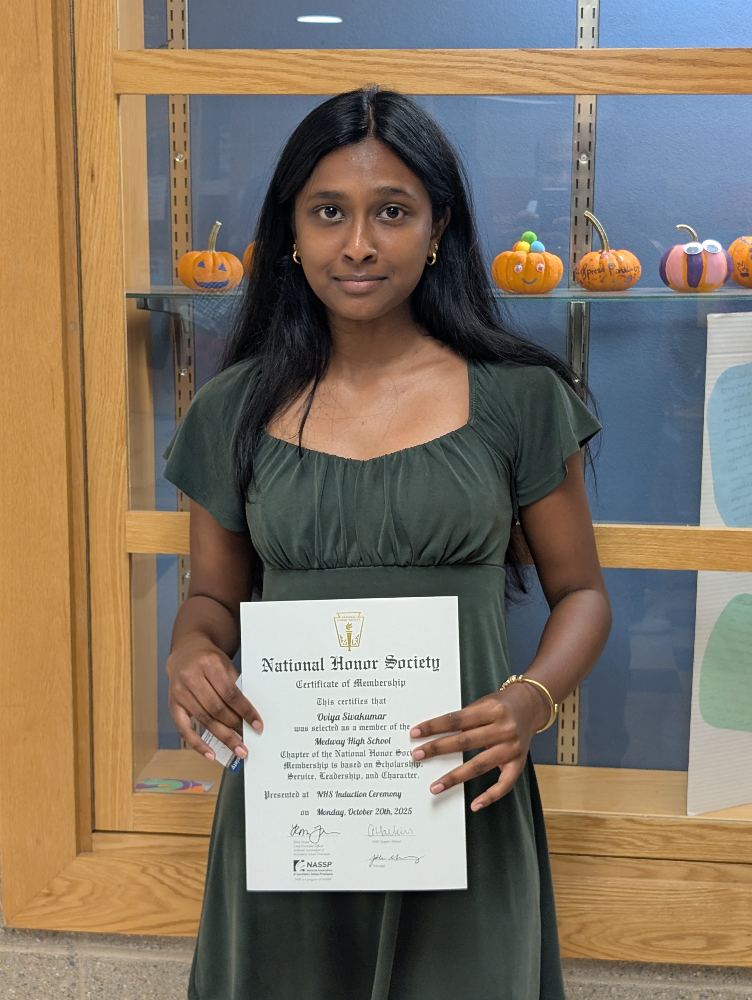
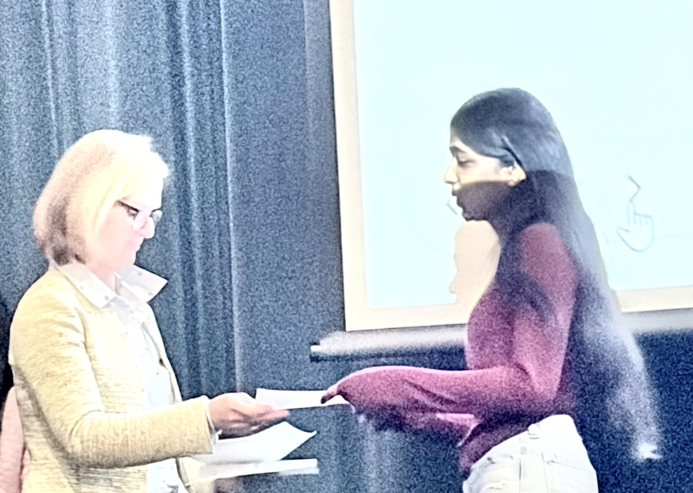
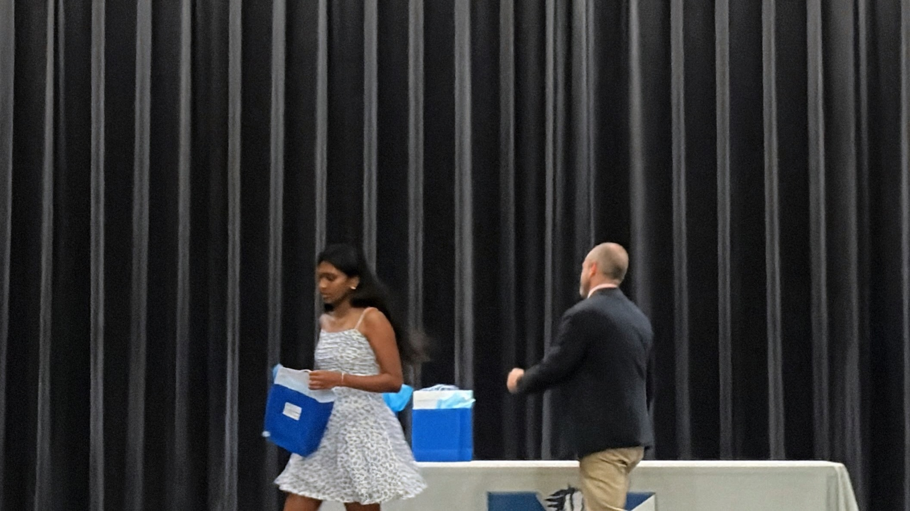
Athletic Achievements
Cross Country Team Captain
Selected as varsity captain; organized summer captains' practices and led younger teammates, fostering an inclusive team environment. Never missed a practice or meet.
2026-PresentWinter Track & Field
Varsity athlete running the 2-mile (first-place victory), 1 mile, 1000, and 4x400 relay. Recipient of the Unsung Hero Award, 2026.
2024-PresentSpring Track & Field
Junior varsity athlete running the 800m, 1 mile, and 4x400m relay. Never missed a practice or meet.
2023-PresentCommunity Service
Medway Village Food Pantry
Organized food orders and managed carts for distribution in a fast-paced environment, supporting community members in need. Completed over 200 volunteer hours and won multiple awards for volunteer and community service.
2023-PresentShishu Bharati Education
Teacher Assistant supporting weekly cultural and language lessons for 5-to-13-year-olds. Created hands-on educational games and classroom activities, managed materials, and supported individual students during reading and writing practice. Completed over 200 volunteer hours.
2024-PresentSpoken English Academy Tutor
Volunteer tutor helping empower women in India by teaching English to non-English-speaking female students (ages 8-14) through weekly Zoom lessons, improving literacy and communication skills.
2022-2025 spokenenglishacademy.org/tutorsFood Volunteer Service
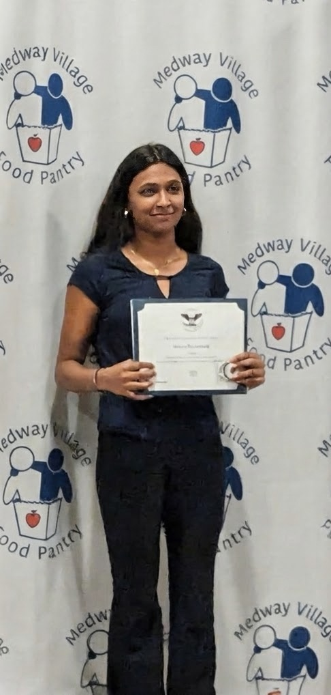
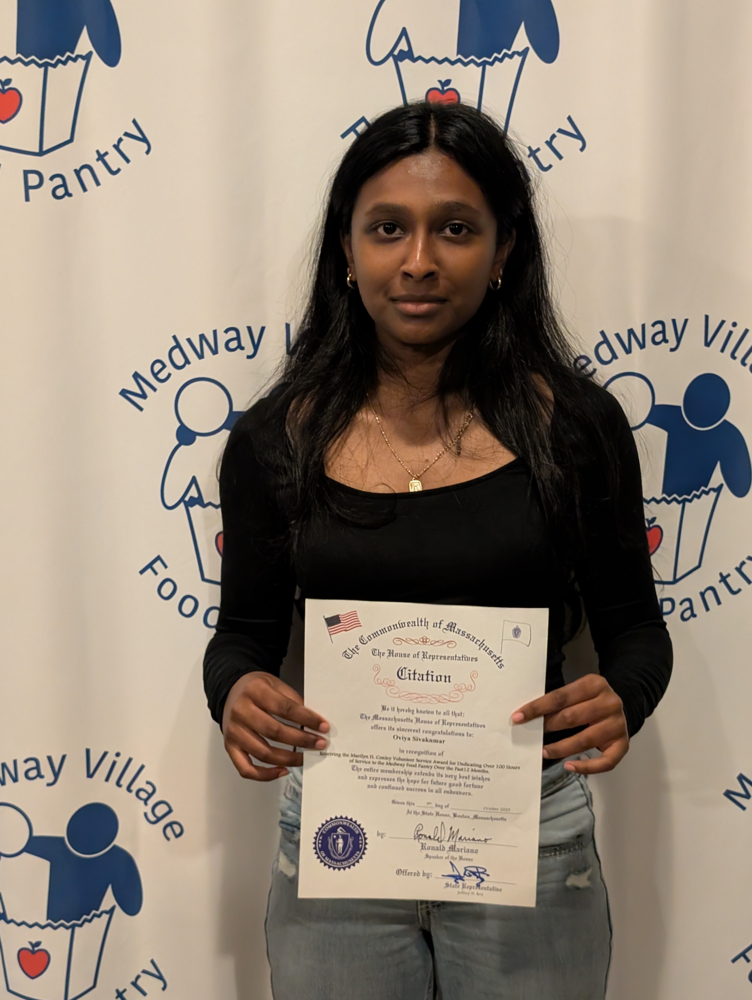
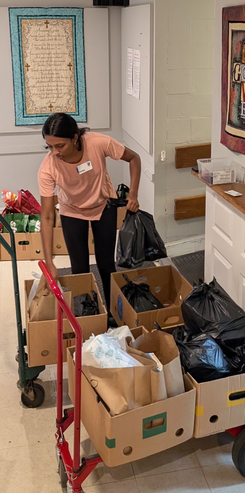
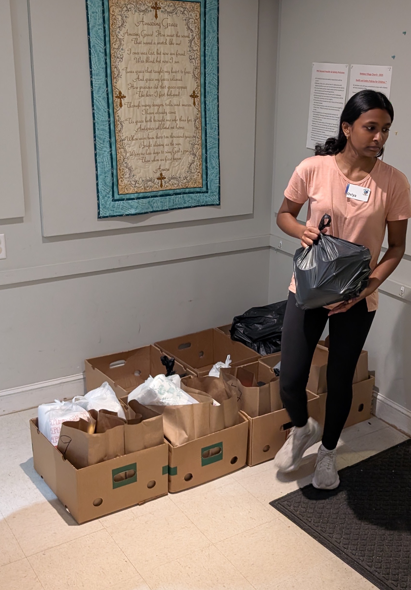
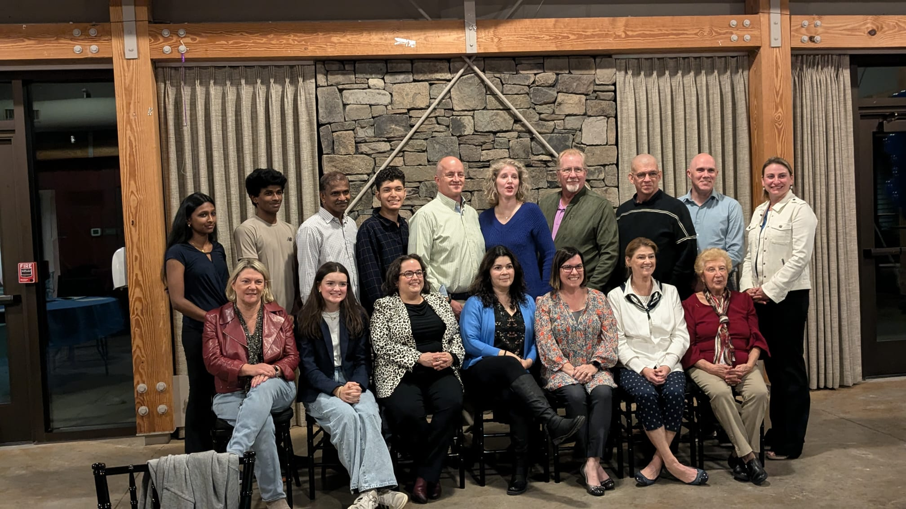
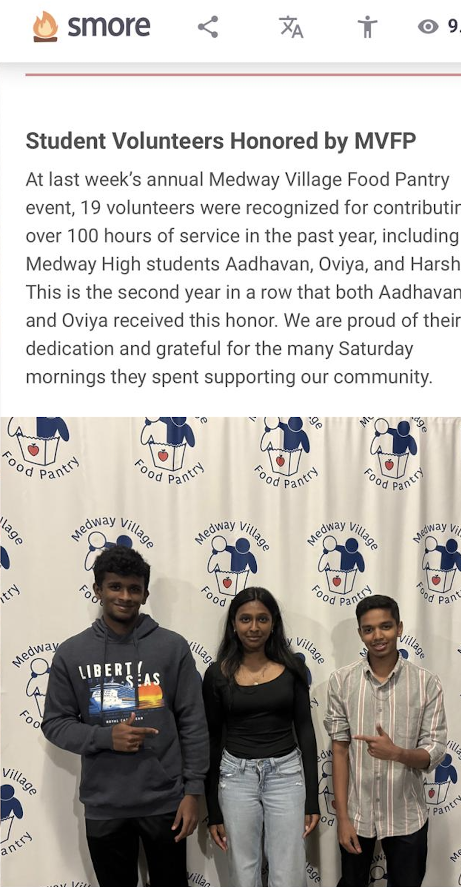
Shishu Bharati Educational Service
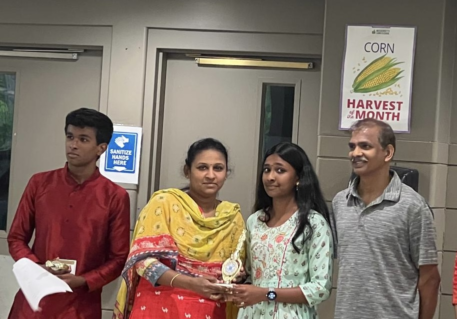

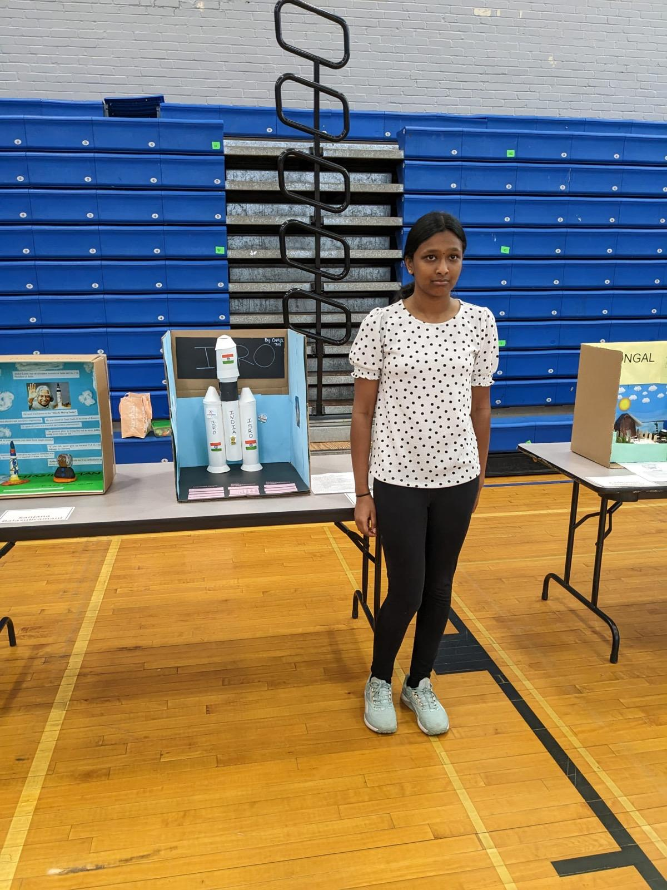
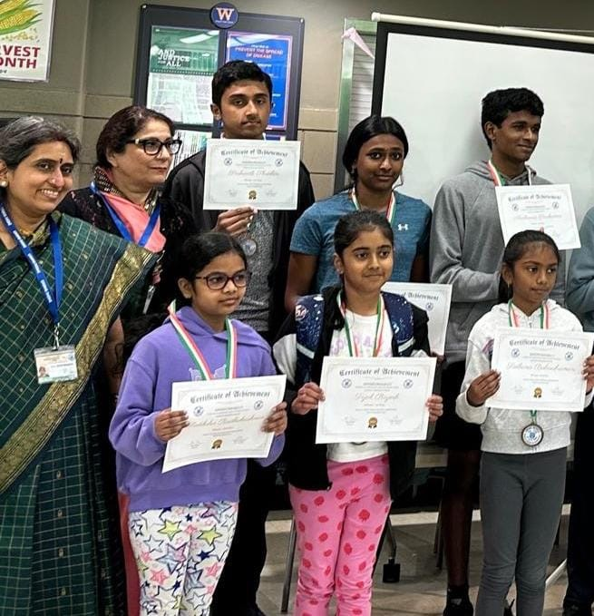
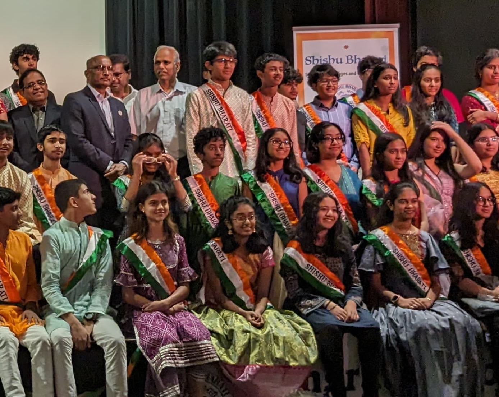
Awards and Commendations
Academic Excellence Awards
Service Recognition
Medway Village Food Pantry
Medway Village Food Pantry
Athletic Achievements
Leadership role in varsity cross country team
Other Honors
Physiology and Anatomy, and Code Busters
Shishu Bharati
Professional Experience
WBLA Data Analysis Internship
City of St. John, New Brunswick, Canada
Paid Intern and Team Lead: analyzed financial data and spending with a team to identify ways to reduce costs and improve efficiency. Organized tasks, kept the team on track, and coordinated project completion. Presented findings and recommendations to WBLA managers.
Finance & IT Internship
Waters Corporation, Milford, MA
Researched KPIs to compare Waters Corporation's performance with competitors. Developed a specialized KPI model to improve performance tracking and identify trends. Presented findings and recommendations to corporate managers.
Work Experience — Black Cow Ice Cream
Millis, MA
Crew Member: provided customer service in a fast-paced environment; responsible for preparing drinks and food following safe food handling standards, cash handling, and opening and closing duties (20+ hrs/week).
Independent Studies & Projects
Worcester State University
Personal Finance Course - Comprehensive study of financial planning, investment strategies, and economic principles
Summer 2025Clubs and Extracurricular Activities
Competed at regional and state competitions in Milford, MA. Earned a Silver Medal for Physiology and Anatomy and Code Busters.
Assisted in organizing and planning community and school events such as pep rallies and dances. Participated in school leadership activities and events.
Member of the school's local math team, preparing for local math competitions through the development of math skills.
Completed independent summer studio courses in acrylics, drawing, and oil painting. Volunteered at weekend workshops teaching foundational drawing skills to elementary students.
Participated in weekly discussions and hands-on experiments on women's contributions to engineering and tech. Helped organize a career fair for students.
Local club pairing students with developmentally challenged peers to build relationships, community, and support through activities and service.
Get In Touch
Let's Connect
I'm always excited to discuss opportunities, share experiences, or connect with fellow students and educators.